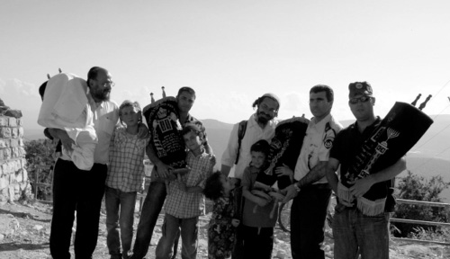
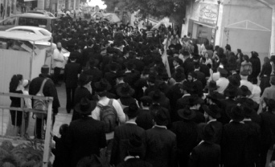
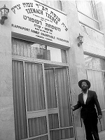

The Six Stolen Sifrei Torah Were Returned
Last week, the ancient Tzemach Tzedek Synagogue in Tzfas held a joyous celebration after its six precious Torah scrolls, stolen the previous Shabbos, were miraculously discovered in an abandoned house. Together with the happiness of the occasion, this marked an appropriate opportunity to take a look

However, last Sunday (chesed sh’b’yesod), after several long days and nights of anxiety, the affair came to a stunning conclusion. A group of local children, playing in the vicinity of the Old City, came across an abandoned house, where the six Torah scrolls had been concealed.
Rabbi Shmuel Davidson, head of the Tzemach Tzedek Kollel, will never forget that joyous moment: “At around four o’clock in the afternoon, when we were in the middle of our daily learning schedule, Yehoshua Dovid Nota Kopp and two other boys came to me in a state of great excitement to say that they had found the Torah scrolls in a deserted building. We immediately halted our studies and quickly followed them to the old house. To our great surprise, as we entered the premises, we saw the six Torah scrolls wrapped in the white tablecloths that had been stolen together with them. I immediately called the Rebbe’s shliach, Rabbi Gavriel Marzel, who also serves as the rav of the shul, and he called the police to inform them of the discovery.”
The police arrived shortly thereafter, took fingerprints, and when they completed their investigative work, they spontaneously began to dance together with the jubilant kollel students. At that moment, it seemed as if the entire city of Tzfas – steeped in gloom over the theft of the Torah scrolls – was shouting and rejoicing. Upon hearing the news, numerous residents came to see for themselves the amazing sight of the return of the Torah scrolls to the synagogue.

A mixture of shock and incredulity struck many Tzfas residents that Shabbos, the 13th of Iyar, the yahrtzait of the Rebbe’s brother, R’ Yisroel Aryeh Leib Schneersohn, of blessed memory, whose resting place is located in the local Tzfas cemetery, a short distance from the Tzemach Tzedek Synagogue. As the shul’s gabbai arrived that morning, he was stunned to discover that the main entrance to the synagogue had been left wide open. As he walked in, the scene left him aghast for several minutes. The doors of the aron kodesh had been ripped off, and the six Torah scrolls that were usually kept there, were gone. The shul’s interior was in shambles. The thieves had broken into the personal lockers of the synagogue members, and there were s’farim and tablecloths strewn around in every corner.
Word of the terrible theft spread like wildfire, and within a matter of minutes, dozens of Old City residents gathered in the shul, as they grieved over the theft of the Torah scrolls, including some that were quite old. Chabad Chassidim, who knew quite well how much the Rebbe had invested in the synagogue’s renovation, were especially pained to hear about the crime.
When I came to the shul the following day, the overall feeling was very unpleasant. “Tears streamed down my face during those moments,” said Rabbi Gavriel Marzel. “Imagine if you had bought a house for a large amount of money, only to find it the next morning totally destroyed. That is how we felt. It took me a long time to digest that this had really happened.
“At the request of the police officials, we closed the shul to enable them to conduct an investigation of the crime scene. But the shul’s members would not go to other shuls. No one was prepared to daven somewhere else at a time like this. Everyone went to make a minyan at the nearby Chabad House. One of the shul members, R’ Yaron Jackson, ran to the Beirav Synagogue, where his own personal Torah scroll was located. He brought it to the Chabad House until the stolen Torah scrolls could be retrieved.”
We met Rabbi Marzel in the shul before Mincha on the following Sunday. The sight was heartbreaking. The aron kodesh was still wide open, its doors ripped off and lying on the floor. Throughout the interview, Rabbi Marzel’s mobile phone was constantly ringing, as many Jews who had heard about the theft were calling to offer their assistance.
The first person who saw the devastation was the gabbai, R’ Sholom Pasternak. He was so shocked that he ran all the way from the Old City to Rabbi Marzel’s house near Kiryat Chabad. “We didn’t meet along the way as I was already heading to shul,” said Rabbi Marzel, as he recalled the experience of that Shabbos morning. “When I opened the door to the synagogue, I was stunned beyond belief. We stood speechless in front of the empty aron kodesh. The anguish we felt at that moment was simply indescribable. I had heard that in the days of the Tzemach Tzedek, the shul had housed seven Torah scrolls, and it was my dream to achieve this as well. Now it seemed that this dream had been shattered.”
In the meantime, many neighbors, including those who were not yet Torah observant, arrived at the scene and one of them contacted the police. “When the officer came, I asked him if he was Jewish. When he said that he wasn’t, I explained to him that he could do his job and write down what he wanted, but I wouldn’t sign the complaint form due to the sanctity of Shabbos.” There were several pairs of t’fillin lying in a pile on one of the side tables. They had been forcibly removed from the private lockers of shul members, but for some reason, the thieves chose not to take them. They wrapped the Torah scrolls in the Shabbos tablecloths before sneaking out of the shul.
We found out later that a Gerer Chassid staying in the Old City had seen some men carrying Torah scrolls. He approached them and kissed the Torahs, not realizing that those holding them were thieves.

This shocking incident received considerable publicity. As a Tzfas resident and a member of the city’s Chabad community, I decided to take a historical journey back nearly forty years, when the Rebbe gave instructions to restore the glory of the Tzemach Tzedek Synagogue.
When did Chabad Chassidim first arrive in the Old City? It turns out that the first Chassidim in Tzfas were led by Rabbi Menachem Mendel of Vitebsk, who decided to settle there before eventually making their way to Teveria. This marked the opening chapter of Tzfas› chassidic history. Even after they departed from Tzfas, there were always some who stayed in the Old City, as we can see in the historical records of Kollel Chabad.
During the leadership of the Tzemach Tzedek, the shul was built by his Chassidim. The only case where we see how our Rebbeim related to the shul›s construction appear in the seifer The Tzemach Tzedek and the Enlightenment: “During that year – 5601 – the Rebbe sent fifteen thousand rubles to Eretz HaKodesh, may it be rebuilt and re-established, a portion of which was used to pay previous debts. Similarly, the Chabad shuls in Yerushalayim and Tzfas were then established.”
The decision to establish the synagogue had been preceded by a personal matter involving the Tzemach Tzedek’s niece, Baila, who had come to Tzfas around this time with her five children. This niece was the daughter of his half-sister, Devorah. After the untimely passing of the Tzemach Tzedek’s mother, Devorah Leah (the Alter Rebbe’s daughter), his father, R’ Sholom Shachne, married the daughter of the holy R’ Aharon Karliner, and their daughter was Baila’s mother.
This niece’s husband was R’ Yeshaya HaLevi Horwitz, one of the Tzemach Tzedek’s Chassidim, and an eighth generation descendant of his namesake, the Sh’la HaKadosh. At the time of their wedding, the Tzemach Tzedek delivered the chassidic discourse Rani Akara. The couple had five children, and the Chassidim of that generation called them “the five books of the Torah.” After her husband’s passing, Baila returned to live for a while with her uncle, the Tzemach Tzedek. The Rebbe later sent her back to Tzfas, after he accepted responsibility to provide for her family’s material needs, together with Rabbi Aharon Karliner and her uncle Rabbi Aharon of Chernobyl.
After she arrived in Tzfas, Rabbi Shmuel Heller, then chief rabbi of Tzfas, and the city’s other leading Torah scholars would customarily visit her to hear pearls of wisdom that she had personally heard from the Tzemach Tzedek. For her part, Baila maintained close contact with her uncle, and when she heard that there was a dispute in Tzfas between Chabad chassidim and Polish chassidim over various customs, she informed the Rebbe about it. In his reply, he encouraged her to establish a separate Chabad shul in Tzfas. These instructions were carried out, and the shul was given the name “The Tzemach Tzedek Synagogue.”
The synagogue had two floors: one for the main sanctuary, the other for the women’s section. It also had a basement where the mikveh was located. The shul served as the foundation of the Chabad community in Tzfas, and was a forceful impetus towards its eventual development.
From 5636 onward, the Chabad community in Tzfas was headed by Baila’s fourth son, Rabbi Asher Yechezkel, and later by his son, Rabbi Yeshaya Horwitz, author of Eden Tziyon and Pri HaAretz, and who received his rabbinical ordination from the gaon Rabbi Yaakov Dovid Wilovsky (the “Ridbaz”). He served in this position until his emigration to Western Canada, where he became the region’s most prominent rabbinical leader.
In the years that followed, the Chabad community largely disappeared, although a few chassidim remained in the city during this time.
The last well-known Chabad chassidim who lived in the city and continued serving in the synagogue were R’ Shmuel Wachsler and R’ Eliezer Steimetz.
THE SYNAGOGUE’S RENEWAL
Over a period of many years, the Chabad synagogue in Tzfas was in a state of desolation, until its revival as per the instructions of the Rebbe, Melech HaMoshiach. Despite the lack of a solid community, Kollel Chabad had continued to provide support to those Chabad families who remained in the city throughout the years, as listed in the reports made by Rabbi Ezriel Zelig Slonim.
We find the first mention of the renewal of the Chabad community in a letter dated Rosh Chodesh Kislev 5724 from the Rebbe to Mr. Zalman Shazar, who had just been elected President of the State of Israel:
… I was naturally quite thrilled to hear about the Chabad settlement near Tzfas-Miron. However, I don’t have all the details at the present time, particularly with regard to the type of people who are prepared to settle there [in a place] suitable for Russian émigrés…
In 5730, Tzfas was hit by a heavy snowstorm, and the roof of the synagogue caved in, bringing several walls down with it. Concerned citizens removed the Torah scrolls and holy s’farim to keep in their homes for the time being. The severe devastation to this holy site apparently had an effect upon Mr. Eli Kadosh, then-mayor of Tzfas, and he quickly sent a letter to the Rebbe requesting that the Chabad community in Tzfas be restored. In fact, several Chabad askanim in Eretz HaKodesh, headed by Rabbi Efraim Wolf, had unsuccessfully tried to do this for years.
The idea did not become an actual mission until the 15th of Tammuz 5733, when the Rebbe chose Rabbi Aryeh Leib Kaplan, of blessed memory, to be his emissary to the Holy City of Tzfas. On that day, Rabbi Kaplan went in for yechidus, and the Rebbe spoke with him on the subject for twenty minutes.
MIRACULOUS RENOVATIONS
The person chosen to renovate the ancient shul was Rabbi Kaplan. Before he went on shlichus, the Rebbe stressed that the Tzemach Tzedek shul was a central aspect of his shlichus. The Rebbe said, “There is a Chabad shul in Tzfas and they say it is in ruins. Consequently, one of the first jobs will be to renovate the shul. Since I want you to build the neighborhood, you need to see whether it is possible to build next to the shul; that would be good. You can claim that it needs to be near the shul so that it can be a place to gather and have shiurim.”
The Rebbe added that he did not know the details and that R’ Kaplan would have to investigate on site, “But in any case, build the neighborhood nearby so it will be possible to go to the shul.”
A few days after the yechidus, R’ Kaplan received a note with instructions from the Rebbe that began with the following words, “Those matters which the heads of the council there wrote about and promised their help – the first thing is renovating the Chabad shul.”
R’ Kaplan himself began working on it, together with many Chabad askanim, Rabbis: Zushe Wilyamovsky, Efraim Wolf, Shmuel Chefer, and Shlomo Maidanchek. Upon their arrival they found the shul in a decrepit state. A short while later, a surprising instruction came from the Rebbe to complete the renovations of the shul by Tishrei so that people would be able to use it and daven there.
Since they had little time at their disposal, R’ Kaplan considered first putting up a tent so they would be able to daven and only afterward, to begin the massive renovations. When he asked the Rebbe, the answer was “no tent.” They should use the shul. R’ Kaplan spoke with contractors, but when they heard the impossible timetable, about a month’s time, they refused to do it. He tried importuning them to provide at least the outer walls by Tishrei. R’ Moshe Schleifstein of Tzfas was the contractor who agreed to do the job. He still lives in Maaleh Canaan in Tzfas and is 100 years old. He was willing to try, and he brought workers who began the job. When they cleared out the wreckage, they saw that the floor was not damaged and that even the western wall and part of the northern wall were still standing.
R’ Moshe the contractor described what happened:
“R’ Kaplan came to me following the recommendation of the deputy mayor, R’ Chaim Berkowitz, an Agudath Israel representative in the city council. When he came to my home, my wife welcomed him and offered him a cup of tea and then sent him to the quarry where I worked. He told me about the shul and its history and about the order he had received from the Lubavitcher Rebbe to rebuild the shul by the Yomim Nora’im 5734/1973, one month away. I knew this was nearly impossible, but since this is what the Rebbe wanted, I immediately agreed without even discussing money. After a few days, he brought up the matter himself and said that the Rebbe promised to pay all the expenses.
“Since I did not want to hire Arab workers to build a shul, I enlisted all the Jewish workers who worked with me, twelve of them, and together we worked in twelve hour shifts.”
The workers began the job. However, considering the extent of their progress, it did not look as though the work would be completed by the designated time. The contractor told this to R’ Kaplan and to R’ Zushe Partisan who was involved in every detail. When R’ Zushe heard this, he began to cry. He told the contractor that he was planning to go to the Rebbe for Tishrei and how would he be able to face the Rebbe when the job wasn’t done?
After endless hurdles the shul was ready on Friday, Erev Shabbos Slichos.
R’ Moshe Schleifstein: “That morning, R’ Kaplan came and made the surprising announcement that the Rebbe wanted them to daven there that Shabbos. I agreed to make the effort. I ran an electrical line from a nearby house and got an Aron Kodesh, a table and some chairs. R’ Kaplan brought two Sifrei Torah from a shul in the old city that were there for safekeeping. When they were brought into the shul, it was tremendously exciting.”
On Rosh Chodesh Elul of that year, 5733, the first Chabad kollel opened with the shluchim who went to Tzfas. The kollel opened in the Ashkenazic Ari shul that is near the Tzemach Tzedek shul. When the renovations were finished, the kollel moved by instructions of the Rebbe.
At a later point, when Anash moved to the new neighborhood that had been built on Mt. Canaan, R’ Kaplan asked the Rebbe whether the kollel should stay in the shul or move to Kiryat Chabad. The Rebbe said the kollel should learn in the Tzemach Tzedek shul at least on Mondays and Thursdays. Indeed, the kollel remains there until today.
With the completion of the renovations by Rosh HaShana, the Rebbe sent three instructions. One – there should be a large minyan for the Yomim Nora’im. Two – Anash should hold a procession for Tashlich on Rosh HaShana. Three – the members of the kollel who visited their parents for Sukkos should return for Simchas Torah.
Twenty-five people davened in the Tzemach Tzedek shul on the Yomim Nora’im. Great excitement was felt throughout the fledgling community that had merited to bring back the glory days of the shul. The Rebbe took a great interest in what went on there, and after Yom Tov there was a phone call from R’ Chadakov with the Rebbe listening in. He asked R’ Kaplan how many people davened there on Rosh HaShana and whether there was a women’s section.
In 5738, R’ Kaplan brought the mayor of Tzfas, Aharon Nachmias, to a farbrengen of the Rebbe. During the farbrengen, they gave the Rebbe the key to the city and the mayor described the development of Kiryat Chabad. The Rebbe’s comment was that this was just the first stage and he asked R’ Groner to ask the mayor to wait for the next sicha. In that sicha, the Rebbe spoke about Tzfas and said:
“One of the reasons for the revival of the (Chabad) yishuv, is because it has the shul which was founded by Chassidim of the Tzemach Tzedek, so there would be a continuation in a way of ‘increasing and going,’ like a dwarf on top of a giant. Even though one cannot compare to the Tzemach Tzedek, the Tzemach Tzedek takes every Jew and puts him on his shoulder. Then he is like a dwarf on top of a giant, as per the well known analogy.” (Sichos Kodesh 5738, vol. 2, p. 571)
The Rebbe continued to speak about Tzfas and said:
“The shul was founded by Chassidim of the Tzemach Tzedek over a hundred years ago, and especially considering that by divine providence the shul’s structure remains …”
On another occasion, in a yechidus for the Lelover Admurim on 24 Cheshvan 5745, the Rebbe spoke briefly about the shul. When he spoke about the special quality of the city of Tzfas he stressed, “Due to the greatness of Tzfas, there was also (as in Chevron) a Chabad settlement back in the time of the Tzemach Tzedek. There is also a Chabad shul that was built (I think) back in that period and before that, there were students of the Baal Shem Tov and the Maggid there.”
In the conversation that the Rebbe had with the Israeli ambassador to the US, Chaim Herzog, in 770 on Simchas Torah, it was apparent how he valued the renewal of the Chabad settlement in Tzfas and the shul reclamation. The Rebbe spoke about the shluchim he had sent to Tzfas and about their work.
MOVING MEMORIES
One of the first shluchim to go to Tzfas was R’ Shlomo Raskin, who went with his family in Elul 5733/1973. He described the Slichos that were said in the shul after the hasty renovation of the shul:
“All the Lubavitchers gathered on Motzaei Shabbos. It was a sight I will never forget. The smell of paint was still strong and the lighting consisted of fluorescent bulbs that were hung from the ceiling with chains and powered by a line strung from the next door building.
“Before Shabbos, I went around with R’ Kaplan to the shuls of the city where the Sifrei Torah of the Tzemach Tzedek shul had been placed for safekeeping after the shul had been destroyed. We asked for the Sifrei Torah back. The gabbaim maintained that they had become pasul over the years, but we insisted on their return. Finally, one of the gabbaim was willing to return one Torah which served us for many years.”
When R’ Raskin describes the Slichos that year, one can see that recalling the events of those days is an emotional experience.
“We were all thrilled to participate in something that the Rebbe wanted so much and which came to a successful conclusion in a manner that was above nature. On Shabbos Shuva this year, I went to daven in the Tzemach Tzedek shul and was reminded of that first year. I recalled the smell of fresh paint and the faces of my fellow shluchim, and the first t’filla that was said with such intensity and not only because it was Slichos.”
None of the Chassidim understood the sense of urgency that the Rebbe conveyed regarding the completion of the shul, but after a few days, with the outbreak of the Yom Kippur War, R’ Chadakov said now it was clear why the Rebbe rushed the restoration of the shul. Explained R’ Chadakov:
“Sending shluchim to Tzfas and restoring the shul, and doing the latter with the utmost speed, was no less than a fortification that the Rebbe built in the north in order to halt the Syrian army which reached the Golan Heights, and miraculously remained there without pressing forward into Israel. The Syrian tanks stopped at a distance of forty minutes travel from Tzfas. The Rebbe built a spiritual fortified wall to stop them.”
REBIRTH
The shul was renovated and turned into a proper place for t’filla, but it was obvious that the work was not yet finished. In 5736, the Rebbe sent a group of shluchim to Eretz Yisroel. They settled in Tzfas at which point they added a women’s section to the shul.
“The Ezras Nashim was built on a base of metal poles. It was obvious to all that in the future, the shul would have to undergo massive renovations beyond the patches that had been used in its construction up till that point. In addition, the asbestos roof that was built hastily was not strong enough and a law was passed barring its use,” explained the shliach, R’ Gavriel Marzel, menahel of the shul.
In 5738, Kiryat Chabad was completed and slowly, all the Lubavitcher families moved from the old city to the new neighborhood and the shul was closed once again. The kollel continued there but the activities ceased, and on Shabbos and Yom Tov the shul was closed. Many of the s’farim and Sifrei Torah were moved to the new shul in Kiryat Chabad. The old city in those days was deserted and run down. The government did not put anything into its infrastructure or into the historic tourist sites as they have lately. “People were afraid to live in the old city. They didn’t see a future for it. Whoever lived there was considered eccentric,” recalls R’ Marzel.
The Rebbe was not pleased by the abandonment of the Tzemach Tzedek shul and on 26 Shevat 5739 he wrote a letter to the shluchim in Tzfas in which he noted the goal of their shlichus. In one of the paragraphs, the Rebbe wrote, “In Tzfas a Chabad yishuv was founded or, more accurately put, was renewed, and a Chabad town was founded with all that pertains to it (obviously, in addition to the main thing, the establishment of a shul named for the Tzemach Tzedek which existed already) and, l’havdil, a mikva and an array of schools from kollel to preschool.”
R’ Yosef Yitzchok Gansburg and R’ Gavriel Marzel took the message to heart. They decided to renovate the Tzemach Tzedek shul and bring it back to life. “We committed to opening the shul once again,” said R’ Marzel. “We saw how important this was to the Rebbe. It was hard and complicated at the outset. It’s funny to think about those difficult times when today, a hundred and more people pack the shul every Shabbos. The rest of the week too, the shul is full, but back then it was different.
“We were able to get some Americans involved. They lived in the old city and had a connection with Chabad. Some of them were artists who worked in the area. We also worked on convincing some young married men to take the long walk from the Canaan neighborhood at the top of the hill to the old city at least once a month, in order to make a minyan. We would stand in front of the shul and ask passersby to come inside to form a minyan.”
Throughout the years, the Rebbe continued to inquire about the shul and asked that it be expanded. R’ Marzel never stopped dreaming about a large, beautiful place that would be no less attractive than any other shul in the old city.
“With great effort, we managed to raise the money. Those who lived nearby agreed to forgo their personal property so that we could expand the shul as the Rebbe wanted. The renovations went on for several years until they were completed.”
Five years ago, the shul was finished and there was the sixth Hachnasas Seifer Torah. The renovations were extensive. On the first floor a spacious beis midrash was built where the kollel learns from morning till night, directed by R’ Shmuel Davidson. There are also about a dozen American baalei t’shuva learning in a special yeshiva program that opened two years ago. The two upper floors consist of an impressive shul and women’s section. “On Shabbasos in the summer there is no room to sit,” boasts R’ Marzel. Every day there are minyanim which are well attended.
Over the past decade the Tzemach Tzedek shul has been reborn, with dozens of people davening there every day.
Shluchim, rabbanim and distinguished public figures from an array of backgrounds attended the Chanukas Ha’bayis that took place on 19 Sivan 5766/2006. The shul was full of men, women and children who came to rejoice with the Torah.
“It is a great privilege for us, residents of Tzfas, to participate in an event that is all about achdus, Ahavas Yisroel and restoring the crown to its former glory,” said one of the people who davens in the shul to R’ Marzel. Old timers in Tzfas said that the city hadn’t seen such a happy event in a long time. The Torah scroll, as well as the renovations and construction of the shul were funded by Rabbi Avrohom and Mrs. Rechel Rappaport to mark the 22nd yahrtzait of Mrs. Tzivia Chaya Rappaport a”h.
“As far as I’m concerned, the work isn’t finished until the shul has seven Sifrei Torah like it had when the shul was founded by the Chassidim of the Tzemach Tzedek,” said R’ Marzel.
TORAH OF LIFE
When I visited the shul this past week, I found a special place with Jews of all sorts: Chassidim and Litvaks, young and old, and people from across the globe. I visited the shul the day after the theft. People still looked sad. People spoke about it and davened that the Sifrei Torah be found intact.
A week after the theft that rocked the city, the Sifrei Torah were found and the residents of the city, especially those who daven in the shul, were ecstatic.
Nosson Avrohom. "The Six Stolen Sifrei Torah Were Returned." Beis Moshiach, no. 835 (May 22, 2012).